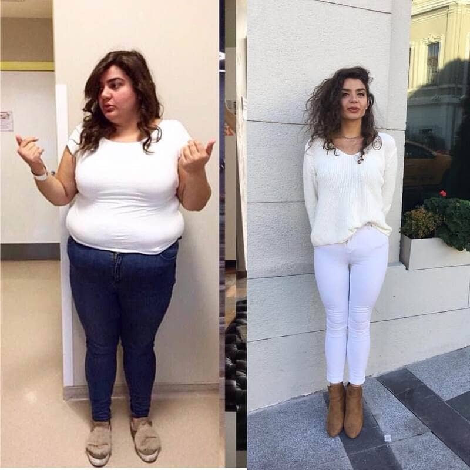
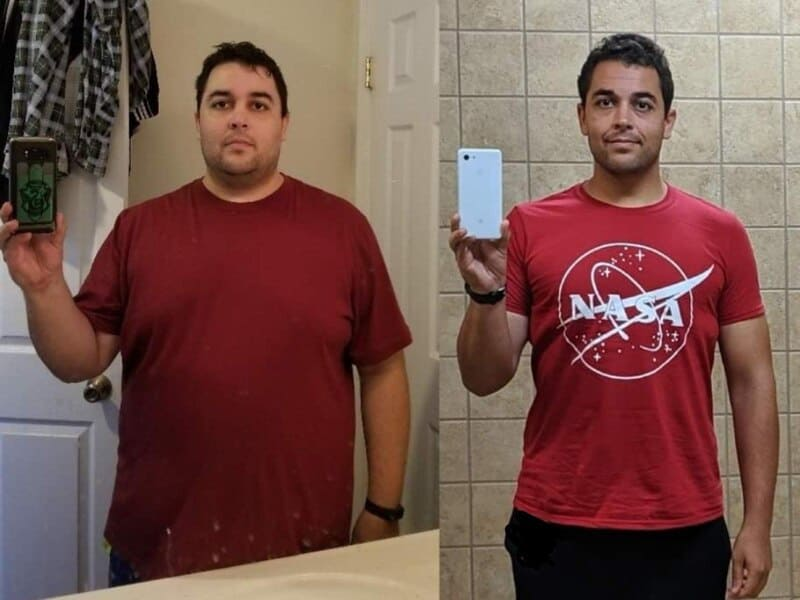
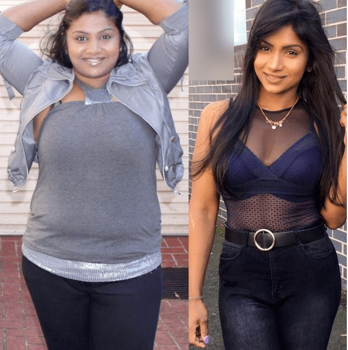
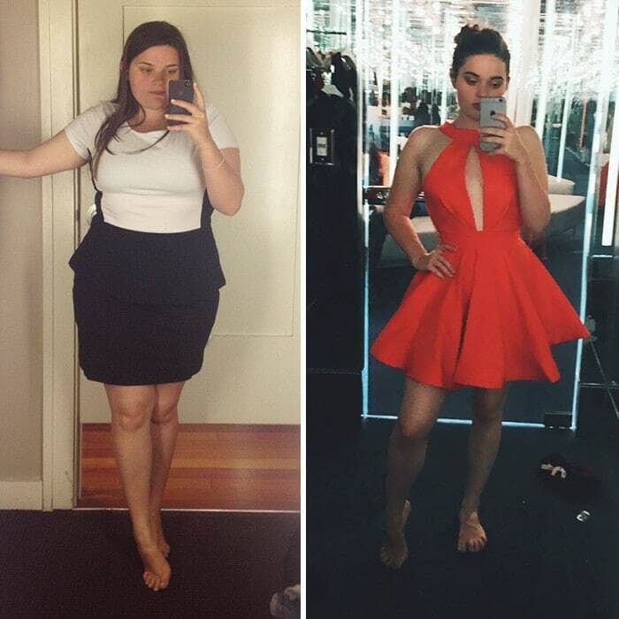
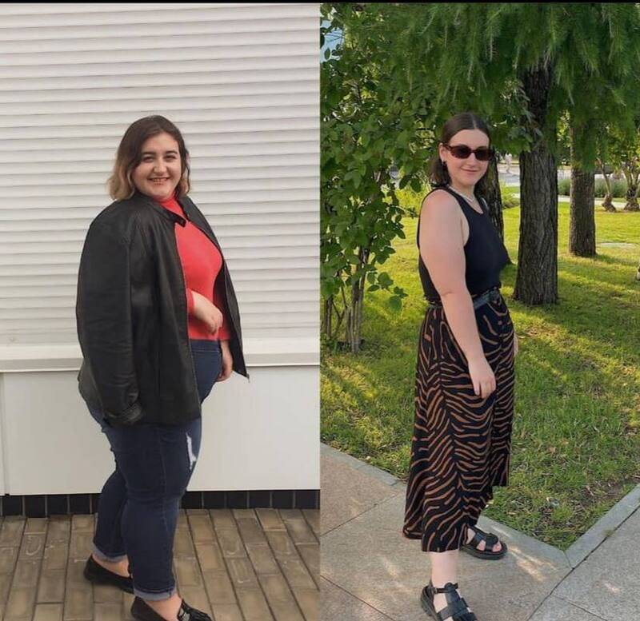
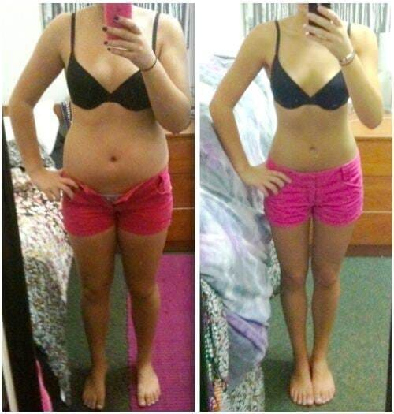

EL DESEO DE LIBRARSE DEL EXCESO DE GRASA PUEDE SERMORTAL. CÓMO PERDER HASTA 15 KG AL MES SIN DAÑAR LA SALUD
Un caso reciente que conmocionó al público: una estudiante de 18 años de Guatemala entró en coma después de tomar las pastillas para adelgazar. Los médicos de todo el mundo están preocupados por el incidente y exigen que se prohíba la venta gratuita de productos para bajar de peso.
Para comprender el problema, hemos recopilado varias opiniones de destacados expertos en el campo de la medicina. Esto es lo que dicen:
Manuel Herrera
Médico endocrinólogo
Experiencia profesional: 25 años
Los métodos modernos para perder peso a menudo conducen al envenenamiento, la falta de nutrientes y al desarrollo de diversas enfermedades. Las consecuencias negativas pueden ocurrir tanto para los principiantes en la pérdida de peso como para los experimentados.
De hecho, la mayoría de los métodos para perder peso, incluso los que se anuncian en la televisión, son extremadamente peligrosos para la salud. Las dietas y el ejercicio funcionan según el mismo principio: poner el cuerpo en un estado de estrés y agotar toda las reservas de energías. Tales tácticas conducen al hecho de que el cuerpo se vuelve vulnerable a los peligros del entorno externo.
La situación es aún peor con las pastillas. Los componentes químicos atacan al cuerpo, no sólo lo hacen vulnerable, también golpean los puntos más débiles y provocan el desarrollo de terribles enfermedades como la celíaca, la diabetes, la enfermedad de Crohn, úlceras estomacales e insuficiencia cardíaca y otras.
Categóricamente no se puede usar medicamentos para bajar de peso sin receta médica. Esto puede tener consecuencias nefastas, como le sucedió a una estudiante de Guatemala.
Según contó la misma estudiante Vanesa Castillo al médico de urgencias, ella tomó pastillas para adelgazar solo un par de días. Sin embargo, fue suficiente para atacar al cuerpo de la joven, privándola de su reserva de energía y luego causar una reacción alérgica severa.
Casi una semana después del incidente, Vanesa Castillo salió del coma y ahora está en cuidados intensivos bajo la supervisión de los médicos. Lo más probable es que la joven vivirá, pero cuáles son las consecuencias ... ya sea, que se recupere del envenenamiento o que quede discapacitada de por vida, esta pregunta permanece abierta.
Esta no es la primera vez que los métodos populares para perder peso conducen a un resultado negativo. Desafortunadamente, cada año hay más y más casos de este tipo.
Sin embargo, no se puede culpar solo a las personas que intentan perder peso utilizando estos métodos populares, se puede entender. A menudo, simplemente no conocen una alternativa segura. Para averiguarlo necesitas ir al médico, y esto les da vergüenza.
Entonces acuden a amigos o, peor aún, acuden a farmacias con la esperanza de encontrar una solución. Y allí se encuentran con farmacéuticos codiciosos cuyo único objetivo es vender tanto como sea posible. Los farmacéuticos no son médicos, no son responsables por la vida de nadie, no piensan en las consecuencias y se callan los riesgos.
Vanesa Castillo por desgracia siguió el mismo camino, tomó estas pastillas llenas de químicos y en menos de una semana cayó en coma. Considero que es mi deber hacer todo lo posible para prevenir tales casos, por lo que quiero informarles a los lectores sobre los productos efectivos para ayuda a perder peso y que no hacen daño.
Hay una pequeña categoría de productos para bajar de peso que son realmente efectivos y que se pueden usar sin receta médica, previa a una consulta con un médico. Hay pocos productos de este tipo, pero existen. Entre ellos, el suplemento vegetal , que se considera el mejor.
¿Por qué es un producto seguro? Porque este suplemento contiene solo ingredientes naturales. Ni un producto químico peligroso y solo ofrece beneficios a base de hierbas.
Para la pérdida de peso es un complejo 100% natural, en general remodela el cuerpo y ofrece un bienestar. Contiene una gran cantidad de sustancias biológicamente activas, como vitaminas y antioxidantes.
A pesar de su composición natural, el producto no es inferior en efectividad a los análogos químicos. Con él, en tan solo 4 semanas, puedes perder de 10 a 15 kg.
Durante el ciclo de uso de , no es necesario seguir una dieta o practicar deportes. Todo lo que necesita es diluir 25 gotas en un vaso de agua y beber 2 veces al día.
Durante el ciclo de uso de , no es necesario seguir una dieta o practicar deportes.
A diferencia de otros métodos para perder peso, la acción de está dirigida a fortalecer el cuerpo y normalizar los procesos naturales. En pocas palabras, ayuda al cuerpo a establecer procesos metabólicos y eliminar el estancamiento de líquidos. El cuerpo se deshace de forma independiente de los depósitos de grasa en las áreas problemáticas.
Recomiendo este suplemento a todos los pacientes que quieran perder peso, y no hay una sola persona a la que este no haya ayudado.
Aquí hay algunas fotos de mis pacientes que han perdido peso con :

Esther Cano
29 años
Eduardo Espinoza
54 años
Beatriz Palma
41 años
Creo que arriesgar la salud y utilizar métodos peligrosos para perder peso - dietas, pastillas y actividad física - es absolutamente injustificado cuando existe un producto tan efectivo como .
José Vázquez
Médico dietólogo
Experiencia profesional: 15 años
Desafortunadamente, casos como el de la estudiante de Guatemala no son raros. La gente sigue considerando las dietas o las pastillas farmacéuticas como una buena herramienta para perder peso.
Afortunadamente, en los últimos dos años han comenzado a aparecer en Guatemala productos seguros para bajar de peso. El más popular de ellos es , un suplemento herbal a base de frutas exóticas: kiwano, rambután y chirimoya.
Considero que este producto es avanzado y definitivamente lo recomiendo a todos los pacientes que quieran perder peso. Todo esto es porque el suplemento no tiene ningún efecto negativo, la pérdida de peso no se produce por deshidratación o dieta, sino por la aceleración del metabolismo.
Durante el ciclo de uso de , todo un complejo de diferentes microprocesos ocurre en el cuerpo. El más importante de ellos es la aceleración del metabolismo. Las moléculas de se adhieren a las toxinas y junto con ellas se excretan del cuerpo. Paralelamente a este proceso, otras moléculas detectan las células grasas que forman el tejido adiposo, las unen y también las excretan, y es precisamente la grasa que se deposita en el vientre y los muslos.
Al limpiar el cuerpo, el suplemento ayuda a estimular el metabolismo. Paralelamente, el cuerpo aprende a no acumular grasas blancas, esto ayuda a consolidar los resultados de la pérdida de peso.
Todo esto es porque el suplemento no tiene ningún efecto negativo, la pérdida de peso no se produce por deshidratación o dieta, sino por la aceleración del metabolismo.
Entonces, en solo un ciclo que dura un promedio de 4 a 6 semanas, el cuerpo se reorganiza por completo para un metabolismo mas acelerado y regula de forma independiente la grasa corporal, evitando que se vuelva a acumular. ¡Esto significa que los kilogramos perdidos nunca volverán!
En este momento, mi única recomendación para pacientes con sobrepeso es . Los pacientes que completan el ciclo de uso de regresan con excelentes resultados. Consiguen no solo perder peso, sino también mejorar el bienestar general. ¡Ninguna dieta, y mucho menos la liposucción, le dará este resultado!
Sandra Serrano
Jefe del Departamento de Nutrición
Experiencia profesional: 19 años
En los últimos 10 años, la obesidad se ha vuelto horrenda. Cada vez hay más personas que acuden a los médicos para pedir ayuda para adelgazar. La mayoría de las veces, estas personas ya han intentado perder peso por sí mismas con la ayuda de dietas, el gimnasio e incluso operaciones. Pero no consiguieron el resultado, o el resultado fue mínimo y desproporcionado con los esfuerzos realizados.

Como regla general, los intentos anteriores causan un daño irreparable a la salud, incluso si el propio paciente no nota cambios en su condición. El daño causado no siempre es tan grave como en el caso de la estudiante de Guatemala. Pero en cualquier caso, el cuerpo se debilita, se hace propenso a alergias y otras enfermedades.
Esto complica el proceso de dar recomendaciones. Hay que pensar en cómo este o aquel producto afectará el cuerpo de un paciente, por ejemplo, un paciente con alergias o una madre joven.
Lo que me encanta de es que el producto es 100% seguro. Está dirigido a fortalecer el sistema inmunológico y no dar efectos secundarios. Se lo recomiendo a los pacientes que han experimentado previamente trastornos hormonales o tienen problemas con el tracto gastrointestinal y ¡ayuda!. Los pacientes vuelven y me agradecen por la recomendación, ya que con su ayuda lograron perder 10 o más kilos en tan solo un par de semanas.
NOTA DE LA REDACCIÓN: Gracias a la iniciativa médica y la Fundación Población Sana, el productor de está realizando una semana de promoción. Del al especialmente el producto está disponible con un 50% de descuento.
Para recibir el producto con un 50% de descuento, complete el formulario de pedido a continuación. Ingrese su nombre y número de teléfono en los campos del pedido y espere la llamada de un especialista para aclarar los detalles. El pedido será entregado por mensajería a su domicilio en un plazo de 3-5 días. Pago al recibir.
ATENCIÓN: hay una oferta especial del fabricante. ¡No pierda la oportunidad de probar con un 50% de descuento!
Dése prisa, la promoción es única y limitada por tiempo.
Luis Olivares,
He sido gordo desde la infancia. Toda mi vida, primero mis padres, luego mi esposa me ponían a dieta, me limitaban los alimentos. A partir de los 25 años, comencé activamente a comprar pastillas. Destruí mi estómago, pero nunca bajé de peso. Entonces, con la salud ya minada, fui al médico y me habló de . Pedí 6 paquetes para un ciclo y como se indica en las instrucciones, 2 veces al día. Entonces, en 1,5 meses perdí 15 kg. Seis meses después de que terminé de tomarlo, ahora intuitivamente, me mimo periódicamente con algunos dulces, sin subir de peso. Por primera vez en mi vida me siento una persona completa:))
Yolanda Piñeiro,
Estoy bajando de peso desde los 15 años :( Ahora tengo 27, mi metabolismo está completamente muerto. Estoy tomando , esta es la segunda semana de uso, siento que comencé a saciarme más rápido, pero todavía tengo miedo de pesarme
Marina Maldonado,
Correctamente, el médico dice que la pérdida de peso debe abordarse con prudencia. Mi hermana ha estado tratando de perder peso toda su vida. Ella probó de todo: pastillas, dietas, deportes intensos, hambre. El cuerpo no aguantó y se quebró, a los 30 años tuvo diabetes. Por supuesto, cuando yo quise perder peso, no repetí sus mismos errores y comencé a buscar en Internet un producto seguro para perder peso. Así fue como encontré . ¡Hice una toma de un ciclo y... -20 kg en 2 meses! ¡Ahora me siento más sana y con más energía que nunca!
Alba Silva,
Marina, ¡guau! ¿Y usted no sugerió a su hermana que hiciera un ciclo de uso de ?
Marina Maldonado,
Alba, ¡por supuesto propuse! Inmediatamente después de que me convencí de la eficacia del producto, aconsejé a mi hermana que hiciera un ciclo. Además, ella consultó a un médico y él le permitió usar . Entonces, mi hermana con diabetes, en 3 meses perdió 25 kg.
Eugenia Toledo,
¡Desde mi propia experiencia, diré que no hay amenaza de aumento de peso después de un ciclo de uso de ! Hice un ciclo hace un año ya, bajé 20 kg. Durante un año, volvieron solo 1,5 kg. Al mismo tiempo, como lo que quiero y no me torturo con entrenamientos.
Rosa Franco,
Me parece que lo que es más importante no es cuánto logró perder, sino cuánto tiempo fue posible contener el aumento de peso después de perder peso
Doctor Manuel Herrera,
Rosa, es importante entender cómo se produce la pérdida de peso con . Este producto ayuda a establecer procesos naturales en el cuerpo: metabolismo de carbohidratos, metabolismo; debido a esto, el cuerpo pierde peso. Después de completar un ciclo, cuando todos los sistemas están en buena forma y funcionan sin problemas, el cuerpo no necesita acumular grasa corporal, por lo que no vuelve a subir de peso.
Respetuosamente, Doctor Manuel Herrera
Aurora Pérez,
Me gustaría probar, pero el precio, en mi opinión, es un poco caro. Puedo comprar 2 paquetes de pastillas para adelgazar en una farmacia por el mismo dinero...
Cristina Lucero,
¿Ha leido el artículo? El médico explica por qué no debe comprar pastillas para adelgazar. Si quiere arriesgar su vida, adelante, vaya por las pastillas. De lo contrario, escuche al médico y use el producto que es probado y seguro.
Isabel Arroyo,
En verdad, usted se equivoca al pensar que ahorrará algo. es buena porque completas 1 ciclo y te olvidas de todo lo relacionado con la pérdida de peso. Y las píldoras deben tomarse constantemente + para que las píldoras funcionen, debe pasar por varias opciones y encontrar cuáles realmente funcionan en su cuerpo. Todo esto requiere mucho tiempo y esfuerzo. ¿Por qué complicarse la vida cuando puede perder peso de manera segura y efectiva con ?
Victoria Ponce,
Quiero probar el suplemento. Entiendo que será más efectivo completar un ciclo. ¿Y cuántos paquetes se necesitan para 1 ciclo?
Doctor Manuel Herrera,
Usted tiene razón, el mejor resultado se consigue al completar un ciclo de toma de . Para un ciclo de (4 semanas) necesitas 4 paquetes. Esto es suficiente para perder de 10-15 kg, según el estado de salud y el peso inicial.
Respetuosamente, Doctor Manuel Herrera
Enrique,
Anda, el precio es ridículo. Para un efecto tan guau, daría 3 o 4 veces más. Tome , no se arrepentirá. Perdí 10 kilos en 1 ciclo sin ninguna dieta especial ni deportes. Que bueno que no ha vuelto el peso tan pronto completé el ciclo, espero que siga asi :)
Julia Cáceres,
Después de dar a luz, gané mucho peso. Por supuesto, traté de no entrar demasiado en pánico, pero la calidad de vida se deterioró. Dejé de sentirme sexy, aparecieron los complejos. Comencé a acosar a mi esposo, sospechaba de infidelidad. No lo soportó, buscó en todo la Internet y me consiguió . Recuperé mi peso anterior en 4 meses, me siento aún más segura que antes y mi esposo está satisfecho:)
Teresa Macías,
Ya dos veces empecé a tomarlas. La primera vez no fui seria, bebía una vez, me saltaba dos. Hubo poco efecto. La segunda vez ya estaba más consciente, diluía las gotas y la tomaba regularmente durante 1,5 meses. Menos de 11 kilos y una figura elegante, eso es lo que sucedió la segunda vez:) Creo que, mientras esté en stock, compraré un par de paquetes más, por si acaso 🙂
Nieves Maestre,
Estoy contenta con mi peso, pero mi metabolismo es malo. Tomé varios paquetes para un ciclo. Estoy tratando de mejorar mi metabolismo. De ello depende tanto la calidad de la piel, como la capacidad de trabajo, incluso la esperanza de vida...
Cristóbal Chávez,
Compré para mi esposa. Pedí 9 paquetes para 3 meses. Así que en dos meses perdí todo lo que quería. Increíble, la piel es elástica, nada cuelga en ninguna parte: una muñequita. Estoy publicando fotos con su permiso :)
">Dolores Navarrete,
Empecé tomar . Para más motivación, compré jeans 2 tallas más pequeñas. Hace tres semanas no podía ni meter la pierna. Hoy ya me lo he puesto, con dificultad y aún así no abrochan :) Pero nada, un mes más y me quedarán bien 🙂
Magdalena Casado,
Ninguna dieta adecuada ayudará a perder peso si su metabolismo está alterado. He estado luchando con este problema durante AÑOS. Estaba muy furiosa hasta que completé el ciclo de uso de . He estado usando el suplemento regularmente durante dos meses y, ¿sabes qué? ¡El efecto es increíble! Menos 6 kg en 2 semanas, figura tonificada, piel elástica y suave, todo gracias a . ¡Quiero perder una talla más para poder usar los jeans que usé hace 10 años cuando tenía 20!
Felisa Espejo,
¡Con la ayuda de , perdí 13 kilogramos que gané durante el embarazo! Muy satisfecha con el resultado :)
Paula Farías,
Tengo miedo de pedir por Internet, por si es una falsificación...
Doctor Manuel Herrera,
Repito, para pedir el producto original con descuento, complete el que se encuentra arriba. Ingrese su nombre y número de teléfono, después el operador se comunicará con usted para aclarar los detalles. Pago sólo AL RECIBIR. Les deseo mucha salud y buena suerte.
Respetuosamente, Doctor Manuel Herrera